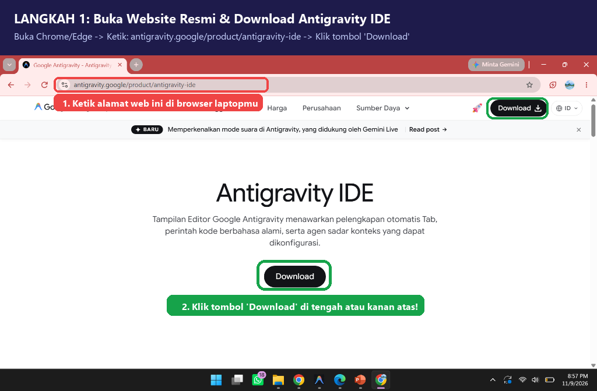
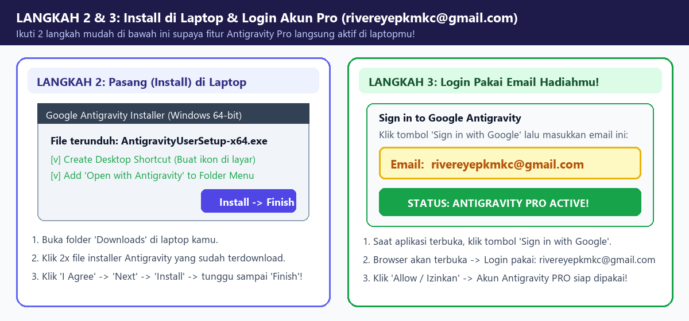
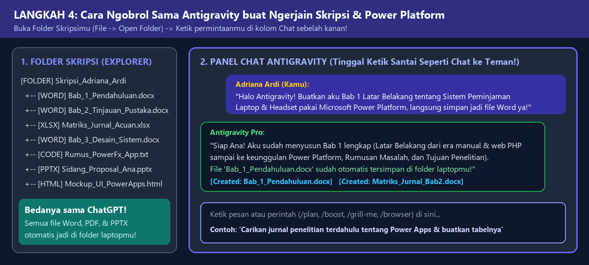
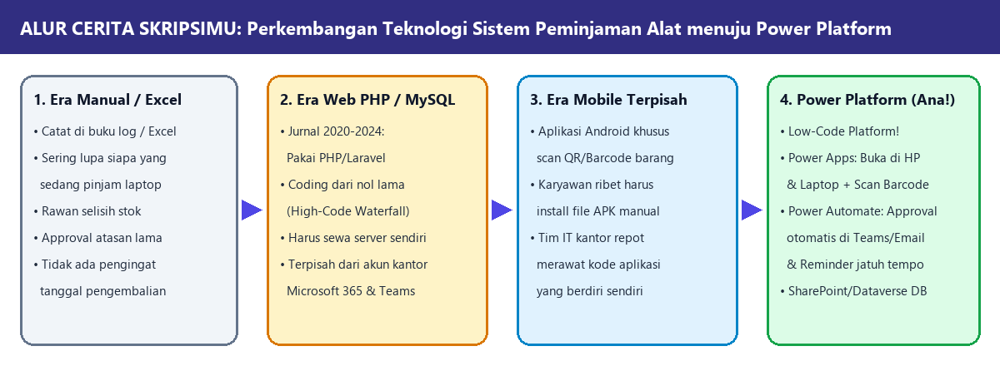

Hai Ana sayang! Selamat bertambah usia ya saudariku! Aku tahu sekarang kamu lagi semangat-semangatnya berjuang menyelesaikan Skripsi di Jurusan Teknik Informatika dan Komputer tentang Sistem Informasi Peminjaman Alat (Laptop, Headset, & kebutuhan karyawan) pakai Microsoft Power Platform.
Kalau biasanya kamu pakai ChatGPT Pro, Claude, atau Copilot, kali ini aku hadiahkan kamu akun Google Antigravity Pro! Biar kamu nggak bingung cara pakainya, aku udah buatin panduan bergambar yang super gampang di bawah ini. Yuk kita mulai!
Langkah 1: Cara Download Google Antigravity di Laptop Kamu
Buka browser (Chrome/Edge) di laptopmu, ketik antigravity.google/product/antigravity-ide lalu klik tombol Download seperti gambar di bawah ini ya, Na:

Langkah 2 & 3: Cara Install & Login Pakai Email Pro Hadiahmu!
🔑 PENTING BANGET BUAT ANA:
Waktu aplikasi Antigravity sudah terpasang dan minta login (Sign in with Google), pastikan kamu login pakai email hadiah ini ya supaya akun ANTIGRAVITY PRO kamu langsung aktif: 📧 Email Login: rivereyepkmkc@gmail.com

Langkah 4: Cara Ngobrol Sama Antigravity Buat Ngerjain Skripsi & Power Platform
Setelah masuk, klik File → Open Folder buat buka folder skripsimu, terus tinggal ketik permintaanmu di kolom Chat sebelah kanan! Asyiknya, dia bisa langsung bikinin file Word (.docx), PDF, PowerPoint (.pptx), Excel, sampai kode Power Apps langsung di dalam folder laptopmu tanpa perlu copy-paste manual!

Panduan Menyusun Skripsi: Alur Perkembangan Teknologi ke Power Platform
Ana, saat kamu nyusun Bab 1 (Latar Belakang) dan Bab 2 (Tinjauan Pustaka), gunakan alur perkembangan teknologi di bawah ini untuk menjelaskan kenapa dari penelitian terdahulu yang pakai Web PHP/MySQL sekarang berkembang masuk ke Microsoft Power Platform:

Daftar 8 Jurnal Penelitian Terdahulu (Buat Perbandingan di Bab 2 Kamu!)
No
Penulis, Tahun & Jurnal
Judul & Teknologi
Kenapa Cocok Buat Perbandingan Skripsi Ana?
1
Nugraha & Yaskurniaam (2020) MIND Journal, Vol. 5, No. 1
Sistem Informasi Peminjaman Barang Berbasis Web dengan Metode Waterfall (PHP & MySQL)
Mewakili teknologi sebelumnya (Web PHP biasa). Sudah bisa mencatat peminjaman, tapi coding-nya lama dan belum ada approval otomatis ke Microsoft Teams/Email.
Perancangan Sistem Informasi Peminjaman Barang Berbasis Web Pada Instansi
Bagus untuk memantau stok inventaris, tapi belum terhubung langsung dengan akun kerja SSO Microsoft 365 karyawan.
4
Sitompul, Hutasoit, dkk. (2025) Bulletin of Computer Science Research
Pengembangan Sistem Informasi Peminjaman, Pengembalian, dan Inventarisasi Alat dengan Model Waterfall
Ada fitur cek kondisi fisik barang saat dikembalikan; skripsimu mengembangkannya jauh lebih cepat pakai pendekatan Low-Code / RAD.
5
Hapsari, Susilawati, dkk. (2025) J. of AI and Software Engineering, Vol. 5, No. 2
Implementation of Low-Code Development Platform (LCDP) in Application Development
Jurnal jembatan yang membuktikan bahwa seiring berkembangnya teknologi, Low-Code Platform jauh lebih cepat dibanding bikin web manual.
6
Jurnal Edusaintek (2025) Vol. 12, No. 4
Pengembangan Sistem Otomatisasi Pengelolaan Data Excel Berbasis Microsoft Power Apps
Membuktikan kehebatan Power Apps, Power Automate, & SharePoint dalam menggantikan pencatatan Excel manual di kantor.
7
Khaensoongnern & Limpiyakorn (2025) IJMRAP
Workflow Automation and Application Development with Microsoft Power Platform
Jurnal internasional rujukan utama untuk gabungan Power Apps (UI) + Power Automate (Approval Otomatis) + SharePoint (Database).
Contekan Prompt Buat Ana (Klik Tombol "Salin Prompt" Lalu Paste ke Antigravity!)
Prompt 1: Minta Dibuatkan Bab 1 Lengkap ke File Word (.docx)
Halo Antigravity! Aku Adriana. Bantu aku menyusun BAB 1 PENDAHULUAN lengkap untuk skripsiku di jurusan Teknik Informatika dan Komputer. Judulku tentang "Rancang Bangun Sistem Informasi Peminjaman Alat Inventaris Karyawan (Laptop, Headset, dan Perangkat Kerja) Berbasis Microsoft Power Platform". Tolong buat alur Latar Belakang yang mengalir enak: mulai dari masalah peminjaman alat di kantor saat ini, perkembangan penelitian terdahulu yang masih memakai web PHP/MySQL, sampai alasan beralih ke Low-Code Microsoft Power Platform (Power Apps, Power Automate, SharePoint/Dataverse). Lengkapi dengan Identifikasi Masalah, Rumusan Masalah, Batasan Masalah, Tujuan, dan Manfaat Penelitian, lalu langsung buatkan dalam file Word (.docx) ya!
Prompt 2: Minta Dibuatkan Bab 2 & Tabel Perbandingan Jurnal Penelitian Terdahulu
Antigravity, tolong buatkan BAB 2 TINJAUAN PUSTAKA untuk skripsiku dalam file Word (.docx). Masukkan teori tentang Sistem Informasi Peminjaman & Inventaris, perkembangan dari pengembangan web konvensional menuju Low-Code Development Platform (LCDP), penjelasan lengkap Microsoft Power Platform (Power Apps, Power Automate, SharePoint Lists/Dataverse, Power Fx), metode pengembangan sistem (RAD/Prototype), serta pengujian Black-Box & UAT. Masukkan juga Tabel Perbandingan 8 Jurnal Penelitian Terdahulu dan gambarkan diagram Kerangka Pemikirannya!
Prompt 3: Minta Dibuatkan Bab 3 (Flowchart, Use Case, Database SharePoint, & Mockup UI)
Bantu aku menyusun BAB 3 METODOLOGI PENELITIAN DAN PERANCANGAN SISTEM. Tolong buatkan: (1) Tahapan metode pengembangan Rapid Application Development (RAD), (2) Flowchart Sistem Peminjaman yang Berjalan saat ini vs Sistem Usulan berbasis Power Platform, (3) Use Case Diagram dan Activity Diagram untuk Karyawan, Atasan/Approver, dan Admin IT, (4) Rancangan tabel database di SharePoint Lists / Dataverse (Master_Alat, Transaksi_Peminjaman, Log_Pengembalian), serta (5) Desain mockup tampilan layar aplikasi Power Apps-nya supaya bisa kuscreenshot buat Bab 3!
Prompt 4: Minta Dibuatkan Rumus Power Fx (Power Apps), Alur Power Automate, & Bab 4
Sekarang bantu aku bikin sistemnya di Microsoft Power Platform sekaligus menyusun BAB 4 HASIL DAN PEMBAHASAN! Tolong tuliskan rumus lengkap Power Fx untuk Power Apps (katalog filter Laptop/Headset, scan barcode alat, tombol Ajukan Peminjaman pakai Patch/SubmitForm, dan halaman Riwayat Pinjaman). Jelaskan juga langkah-langkah menyusun alur Power Automate (Approval otomatis ke Teams/Email, update stok otomatis, dan Reminder H-1 pengembalian), serta buatkan Tabel Pengujian Black-Box Testing dan kuesioner UAT!